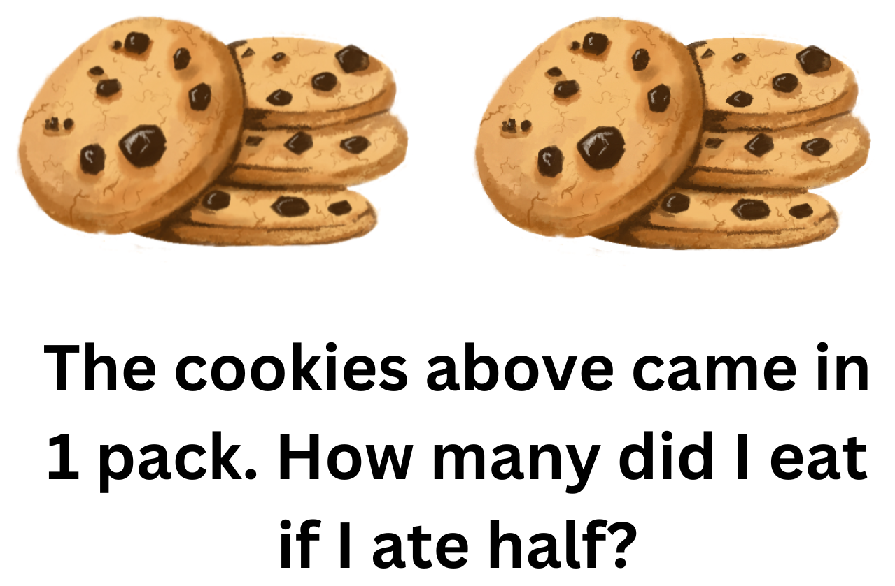
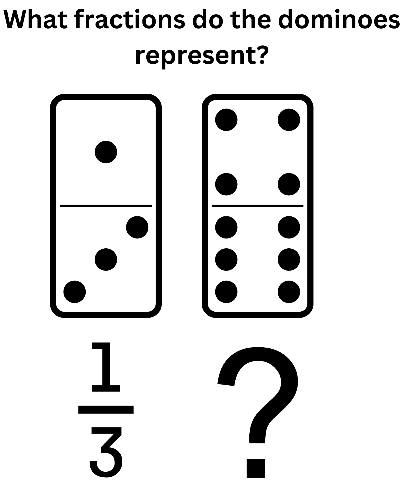

Do It! Vectr: Fraction Infographic
 The Challenge
The Challenge
Your challenge is to explore what an infographic is and how it can be used to educate others about a topic. You will then use the shapes, elements and other pictures in Vectr to create an infographic about fractions.

Project Steps
-
Plan Your Infographic
-
Create Your Infographic
-
Present Your Infographic
Plan Your Infographic
Before you can make your infographic you need to make a plan. Look at some examples of infographics online to help you brainstorm and gather ideas. Infographic Site and Visually have some great examples to get you started.
As you are browsing consider the following questions:
- How do you want your infographic to look?
- What information do you think is important to include?
- Are there any specific pictures, visuals, or diagrams that you want to include?
Keep in mind that this infographic is meant to be a resource to teach someone about fractions that has no prior knowledge of them. You may find it helpful to think back to when you were learning about fractions and what was useful for you. Some possible ideas to include in your infographic may be:
- Using pictures of pizza to show how the pieces can represent different fractions when divided like (, , , etc)
-
Showing how you can compare fractions by using food pictures such as, pieces of watermelon, pieces of cake, or packs of cookies

- Using a number line to draw and compare fractions
- Using shapes like triangles, rectangles, heart and stars to explain equivalent fractions
- Using pictures of dominos pieces to learn how to write fractions

Think of what pictures, diagrams, or visuals you may want to include. Make a list of the topics and visuals that you think are important. Many infographic designers sketch their designs or plans while they are brainstorming to help them see their vision and guide them as they make their final product.

Create Your Infographic
Now is the fun part! You have decided the information you want to include and how you would like your infographic to look. It is now time to make it. The first step is to go to Vectr and click on “New Artwork”. Most infographics are recommended to be about 600 pixels wide and about 1000 pixels high.

You can customize the size on the right by adjusting the width and height.

Once you have it the size that you would like make sure that you name it so you can easily find it in case you have to edit it again a different day. A suggestion may be something like: “Fraction_Infographic”. You can then begin creating your infographic!
Present Your Infographic
The final step is using your infographic to educate others! Show a classmate what you have and ask them what they think. You could try quizzing them on a couple of fraction problems to see if they learned what you hoped to teach them. Does your infographic accomplish what you hoped?